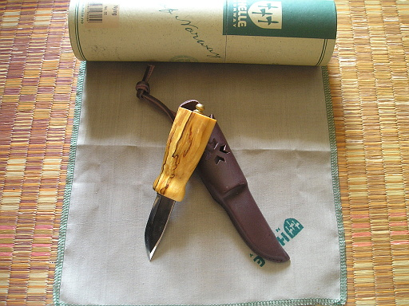
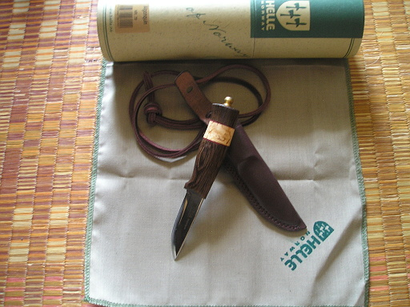

2016 年
11 月 26 日 ( 土 )
最近の散財 ナイフ 2
先日 OPINEL のナイフを集めていることを書きましたが、OPINEL を集めながら別のメーカーのナイフも集めてました。
ノルウェーにある Helle というメーカーのナイフです。

このナイフは Eggen というナイフでエゲンと読みます。ブレードは当然としてハンドルの白樺の木目が綺麗なので思わずポチってしまいました。実用性は当然あるのですが、今のところ木を削ったりするのには Mora のナイフがあるので Eggen はもっぱら観賞用です。
Helle などの北欧のナイフはいかつくないデザインなので好きです。

このナイフも可愛いのと、実用目的でポチりました。Nying です。ニーイングと読みます。ネックナイフと言っていいほど小さなナイフです。ハンドルが平べったいのですが、なぜか握った時にしっくりきます。このナイフもハンドルの木目が美しいです。日本正規代理店の国内在庫の最後の 1 本を私が買いました。再輸入されなければ日本ではもう手に入りません。ebay などには若干取り扱いがあるようです。
Helle の日本の正規代理店は株式会社アンプラージュ・インターナショナル ( 以下 UPI と略します ) という会社なのですが、この会社、ナイフを送ってくるときに、一緒になかなか立派なカタログも送ってきます。でこの UPI は Mora の正規輸入代理店でもあって、Nying を購入した時に Mora のこんなカタログも同梱してきました。

それで Mora の Eldris の購入意欲が亢進してしまった結果お買い上げとなってしまい、実用目的で購入した Nying は、これも観賞用になりました。

このネックナイフは Helle のカタログを見ていて欲しくなり、衝動買いしてしまいました。Algonquin といい、アルゴンキンと読みます。やはり小さくて可愛いナイフです。
あと Helle では Besseggen というナイフが欲しいのですが、日本では手に入らないようです。国内在庫を売り切ったのか、それとも取り扱い自体をしていなかったのかは不明です。
- Category :
- Camping
- ナイフ
- 日記